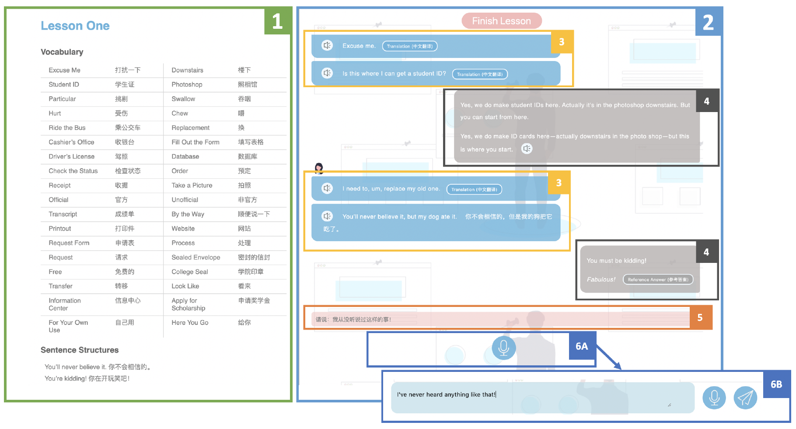

EnglishBot: Conversing with a Voice Chatbot to Practice Foreign Language Speaking Skills
Smart Primer Research Group, Computer Science Department, Stanford University February 2019 - Present
EnglishBot

Listen-and-repeat
What is EnglishBot?
EnglishBot is an AI-powered interactive conversational agent designed to practice oral English skills with native Chinese speakers.
Hypothesis
Conversational AI agents have the potential to enable more engaging and effective learning of oral English for L2 English learners.
Systems
To investigate this hypothesis, we created EnglishBot, an interactive dialog agent conversing with native Chinese speakers to practice English speaking skills. We compared EnglishBot against a listen-and-repeat system, the traditional tool for Chinese students to learn oral English at school.
Study
We evaluated EnglishBot with 60 students through two within-subject studies against the listen-and-repeat system.
Based on the order of when people came in, each participant was arbitrarily assigned one of the two systems to practice oral English with.
The study lasted for six days, with a pre-evaluation on the first day and a post-evaluation on the last day.
Participants were asked to use their assigned system to practice conversational English for one lesson each day, with six lessons in total.
Roles
• Collected, scraped, and parsed online open source conversational English practicing materials and audio lessons
• Designed and implemented the full-stack frameworks (UI/UX, database, and server) of EnglishBot, an interactive web-based chatbot, and a listen-and-repeat system used to teach oral English conversations to native Chinese speakers with English as the second language
• Devised, streamlined and conducted two between-subject studies with 60 users to compare the learning engagement and effectiveness of using EnglishBot and the listen-and-repeat system for practicing conversational English
• In preparation of a paper to be submitted to ACM Learning @ Scale (L@S) 2020 as the co-first author